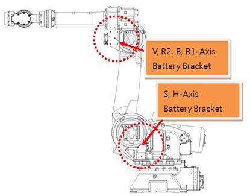
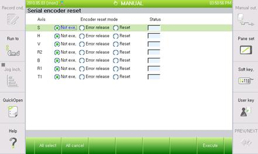

1.1.10.1. Outline
Power must be supplied to the encoder at all time for it to be able to store the motor's location data.
Encoder's power will be supplied when the controller's power is on or from the encoder's back up battery. This error will occur, if the controller's power goes off while the encoder's back up battery is discharged. (as it will cause the encoder to lose the location data)
The same error will also occur when the motor is being replaced, because the new motor's encoder is not supplied with power.
Please move the Robot to reference position by using an axis coordinate manual control to re-adjust the axis's encoder as encoder reset will change the reference position data of the axis.
1.1.10.2. Causes and examine methods
|
(1) Please check the voltage of encoder's battery.
(2) Please examine the Encoder's battery connection status.
(3) Please replace the motor and test it.
(4) Re-adjustment of the encoder from Robot's reference position must be done after the encoder reset |
(1) Please check the voltage of encoder's battery.
Encoder's batter uses 3.6V. If the voltage decreases to 3.0V~3.2V, a message of "W0104 (¡Û Axis) Encoder battery voltage is low" will be displayed. Please replace the encoder's battery if this warning occurs. Replacement of encoder's battery must be done while the controller's power is on. If the encoder battery is replaced at this stage, Robot's operation will not be interrupted.
If you miss the time to replace the encoder's battery, and the battery voltage reaches to 2.5V~3.0V, and error of "E0108 ¡Û Axis) Encoder error: Encoder reset required" will occur.
At the point of this error occurs, the encoder already lost the location data.
Please move the Robot to reference position by using an axis coordinate manual control to re-adjust the axis's encoder followed by a replacement of encoder's battery and the reset of encoder.

Figure 1.50 Location of Encoder's Battery Replacement
Encoder reset can be executed from the below menu.
Ø System
Ø 5. Initialize
Ø 4. Serial encoder reset

(2) Please examine the Encoder's battery connection status.
Please examine the connection status from encoder's battery to the motor.
(3) Please replace the motor and test it.
If the above do not solve the problem, there is a high possibility that the encoder itself is the cause. Please replace the motor and test it.